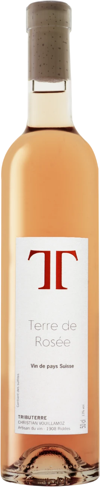
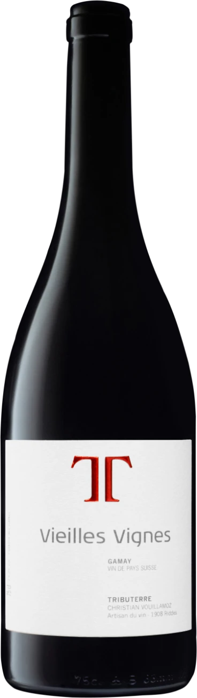
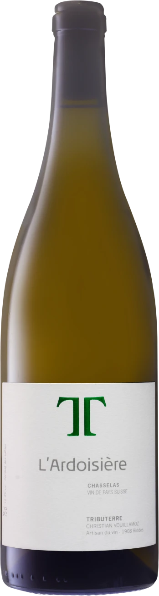
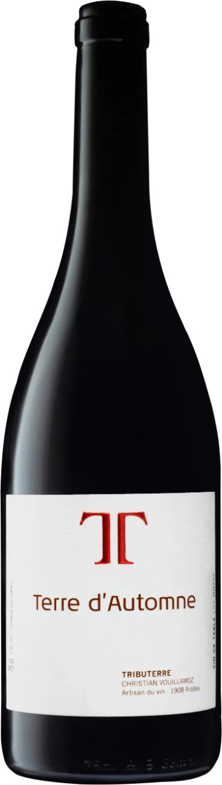
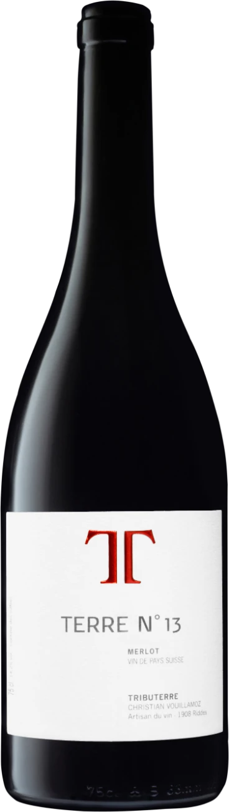
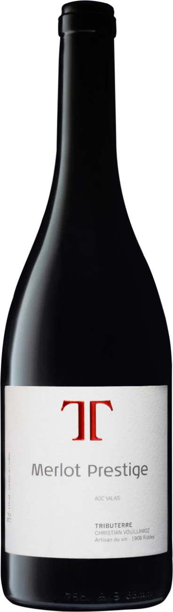

Blanc · Chasselas · Nouveauté
Fendant
Le chasselas valaisan dans toute sa fraîcheur — fleurs blanches, tilleul, une pointe de silex.
CHF 14.–Des rouges, un rosé, des blancs, le prestige. Neuf cuvées, faites à la main, en vente directe depuis la cave de Riddes.
Scrollez pour découvrir la sélection.
Le chasselas valaisan dans toute sa fraîcheur — fleurs blanches, tilleul, une pointe de silex.
CHF 14.–
L'assemblage blanc de la maison. Nez fin et délicat, bouche fraîche et minérale, à la finale saline.
CHF 19.–
Belle robe saumonée, nez printanier, bouche fruitée et florale sur les fruits à noyaux. Finale gourmande.
CHF 15.–
Robe rubis, nez de griotte et de pivoine, bouche ciselée aux nuances de violette. Tanins délicats.
CHF 18.–
Nez intense sur le cacao, le kirsch et la vanille. Bouche souple et pure, longue finale aux tanins fins.
CHF 25.–
Blanc · Assemblage
Née du terroir ardoisier de Leytron. Un blanc tendu et lumineux, sur la pierre et les agrumes.
CHF 17.–

Rouge · Assemblage
L'assemblage de saison de la maison. Un rouge généreux, sur le fruit mûr et la rondeur.
CHF 16.–

Rouge · Merlot
Merlot droit, élevé sans détour. Fruit noir, profondeur et trame sobre, pour un vin franc.
CHF 21.–

Rouge · Merlot
La cuvée haut de gamme. Un merlot d'élevage patient, dense et raffiné, à la longue finale boisée.
CHF 32.–
Vente directe, sur rendez-vous ou à la cave de Riddes.